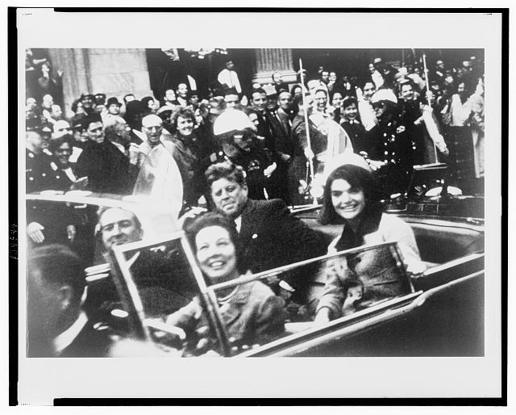

Прибытие
Президентский самолёт приземляется в аэропорту Лав-Филд.
22 ноября 1963 года президент США был смертельно ранен во время кортежа в Далласе. Что установили расследования, какие доказательства сохранились и почему некоторые вопросы остаются предметом споров?

Выберите событие, чтобы прочитать краткую справку. Время приводится приблизительно там, где источники расходятся.
Президентский самолёт приземляется в аэропорту Лав-Филд.
Кортеж проходит через Дили-Плаза; президент получает смертельное ранение.
В больнице Parkland объявляют о смерти президента.
Джек Руби смертельно ранит задержанного Ли Харви Освальда.
Президентский кортеж прибыл в аэропорт Лав-Филд. Кеннеди и первая леди Жаклин Кеннеди отправились на открытом лимузине по запланированному маршруту через город.
Не все элементы дела имеют одинаковый доказательный статус. Откройте карточки для пояснений и ограничений.
Освальд работал в Техасском школьном книгохранилище, откуда, согласно официальной версии, велась стрельба.
Любительская киносъёмка запечатлела кортеж и момент нападения с точки наблюдения на Дили-Плаза.
В 1979 году комитет Конгресса счёл убийство, вероятно, результатом заговора, в том числе опираясь на акустический анализ.
Следствие связало найденную в здании винтовку с Освальдом и выстрелами в кортеж.
Комиссия 1964 года заключила, что Освальд убил Кеннеди и действовал один.
ЦРУ, мафия, Куба и другие силы фигурируют в популярных теориях, но наличие конкретного заказчика не доказано.
Переключайте версии. Здесь различаются официальные выводы, выводы поздней комиссии и неподтверждённые предположения.
Официальное расследование пришло к выводу, что Ли Харви Освальд стрелял в президента из здания школьного книгохранилища и не действовал в рамках доказанного заговора.
«Вопросы остаются. Но вопросы — это ещё не доказательство заговора».
Джон Кеннеди был убит в Далласе 22 ноября 1963 года. Комиссия Уоррена назвала Ли Харви Освальда единственным стрелком. Комитет Палаты представителей по убийствам в 1979 году предположил наличие заговора, однако последующая проверка акустических данных поставила один из ключевых аргументов этого вывода под сомнение.
Исторически аккуратный подход — отделять первичные документы и установленные обстоятельства от интерпретаций, слухов и недоказанных обвинений. На сегодняшний день общепринятого доказанного ответа о конкретном заказчике убийства нет.